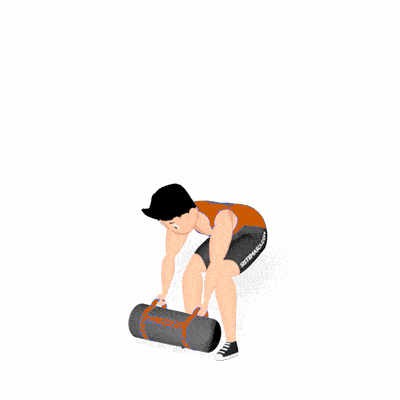

Sandbag Clean

Exercício de CrossFit que combina levantamento e potência, utilizando o sandbag como sobrecarga instável. Fortalece pernas, glúteos, dorsais e braços, exigindo coordenação e explosão muscular.
Ficha Técnica
Tipo: CrossFit
Grupo Muscular: Corpo
Aparelho: Nenhum
Músculos: Nenhum
Como realizar
- Posicione o sandbag no chão à sua frente e afaste os pés na largura dos ombros;
- Flexione os joelhos, segure firme nas alças e mantenha a coluna ereta;
- Inspire e impulsione o quadril para frente, elevando o sandbag até a altura dos ombros;
- Aterre o peso no peito, absorvendo o movimento com flexão de joelhos;
- Expire e retorne o sandbag ao chão de forma controlada, repetindo o movimento.
 RC STORE
RC STORE